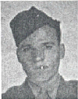

PFC Daniel R. Pedroza: Departed the USA with Company C. He was KIA 6/17/44 on Saipan.
At the time of his death he was an Assistant BAR Man, 1st Squad, 1st Platoon.
The following was extracted from Orvel Johnson's Memories:
During the invasion of Saipan, Marianas Island in World War II, we had landed on the island on June 15, 1944 but because of devastating counter invasion action by the Japanese defenses, we had been confined between the beachhead sector on which we had landed and the high ground. Throughout the 15th and 16th our forces were reorganized, consolidated and resupplied with rations of food, water and ammo, all the while under savage shelling of our positions, supplies and supporting units.
On this the third day on the island our counter artillery was silencing many of the Japanese guns. It was somewhere between 0930 and 1000 hours and all was ready to resume the offensive drive across the island we had planned, trained and prepared for. We were to advance under supporting fire from the Phase Line 01 from the high ridge through a gentle downward sloping field toward sugar cane fields in the low area before ascending the foothills of Mt. Tapotchau. Artillery shelling and aerial bombardment of the area to our front had carried on for an extended time. As it lifted our advance was to begin and with the word to Go, we rushed over the crest, firing at any and all target seen and unseen but probable. Our lines were to pivot on our platoon and units to our right swinging in a large arch to a heading facing Mt. Tapotchau. Machine-guns were in position to support our advance and columns of our tanks were to pass around the high ground through a ravine at the end of the ridge and assume the lead of our advancing attack.
The Japanese commanders had been planning their defense of the island for some time and had developed several levels of defense from which they fully expected to annihilate us. Our plan had been anticipated and their guns of all kinds had been zeroed in on every inch of this battlefield. For the initial microsecond, all that could be heard was the firing of our machine guns, and then all hell broke loose. Cannons on Mt. Tapotchau, artillery units between plus mortars, machine guns, grenade launchers, rifle fire erupted all at once. Bullets and shrapnel from overhead bursts and direct hits by their artillery were in and among us. Japanese infantry fought from behind concealed positions and from spider traps on the slope we were on. The lead tank was hit immediately as it entered the arena and was out of action, blocking the entrance through which the following tanks had to pass but couldn't. Dan and I raced ahead as did our rifleman Ray Ramon, firing our weapons, dodging, dropping, rolling, and jumping up firing as bullets tore through the air, the grass, and our ammunition. It was obvious many marksmen had targeted us. I went down with bullets tearing up my ammo belt and magazines. Both Dan and Ray went down, how bad they had been hit I did not know. I had my own troubles. I continued to run firing dropping and rolling. At one instant as I got up to run, Larry Yates form our company threw a block into my side forcing me to turn aside, while he unloaded his rifle firing into a spider trap about ten feet in front of me, one which I had not seen. About this time there could be heard yelling to WITHDRAW even through the din of the artillery and mortars. How far had we gotten into the field and how much time had elapsed? Perhaps not much more than 30 or 40 feet and in time, maybe 45 seconds. Dan did not respond to the call to withdraw and neither did Ray. The bombardment continued until after all who could withdraw to the security of the ridge had done so.
Daniel R Pedroza died on the slope coming off the Phase Line 01 ridge about 1000 hours on 17 June 1944. For over fifty years I believed Ray had died on the slope too. I thought I had seen his body two days later. I was wrong about Ray. A friend of mine, Rowland Lewis located his name among those wounded who had been returned to the United States and continued to serve until the end of the war.
I, Orvel Johnson, have recorded this. I was the BAR Dan was my Assistant BAR. Ray was the rifleman of our Fire Group. After returning to American soil I attempted several times to locate Dan and Ray's families but to no avail.
Dan and I were foxhole buddies during training and in combat. During the evening of June 16, 1944, the night before he died, Dan showed me the picture of his wife and baby, who had been born since we left the United States. Hopefully Dan's wife and child and perhaps grandchildren will someday learn of this memorial to Dan. If that happens and I am still able to respond, I would welcome their call or letter. I am proud to have been a buddy of Dan's, to have known him for that short time many years ago. He was a true Marine, a loyal American, who gave has life that we should remain free.
Created by Rowland Lewis
Last Modified 08/14/99